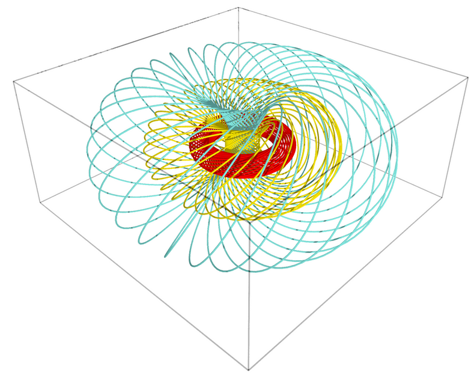

Gallery
Here are some figures produced with the manifold tools of SageMath:
| Stereographic coordinates on the 2-sphere:
This represents the coordinate grids of the two stereographic charts
on the 2-dimensional sphere: in red (resp. green), stereographic
coordinates from the North pole N (resp. South pole S). This figure has been
produced with the method |
|
| Vector frame of stereographic coordinates on the 2-sphere:
This represents the vector frame \(\left(\frac{\partial}{\partial x},
\frac{\partial}{\partial y}\right)\)
on the 2-dimensional sphere, which is associated with the stereographic
coordinates \((x,y)\) from the North pole. The vector field
\(\frac{\partial}{\partial x}\)
(resp. \(\frac{\partial}{\partial y}\)) is represented in blue
(resp. in red). This figure has been
produced with the method |
|
| A curve on the 2-sphere:
This represents a loxodrome of the sphere with its tangent vector
field. This figure has been
produced with the methods |
|
|  | Hopf fibration of the 3-sphere:
This represents some \(\mathbb{S}^1\) fibers of the Hopf fibration of
\(\mathbb{S}^3\), filling three tori as Villarceau circles and
viewed in stereographic coordinates.
This figure has been produced with the method |
| Boy surface:
This represents the coordinate grids of three charts (red, green and blue)
covering the real projective plane \(\mathbb{RP}^2 \), the latter being
immersed in the Euclidean space \(\mathbb{R}^3\) by the Apéry Map (Boy surface).
This figure has been produced with the method |
|
| Kruskal diagram of Schwarzschild spacetime:
This represents the coordinate grid of the standard Schwarzschild-Droste coordinates
\((t,r,\theta,\varphi)\) in terms of the Kruskal-Szekeres coordinates
\((U,V,\theta,\varphi)\). The figure is drawn at a fixed value of \((\theta,\varphi)\).
The solid lines are lines
\(t=\)const, while the dashed ones are lines
\(r=\)const. The black hole interior (resp.
exterior) is depicted in green (resp. red). The thick yellow line represents
the central singularity, located at \(r=0\), and the black line depicts
the event horizon.
This figure has been produced with the method |
|
| Carter-Penrose diagram of Schwarzschild spacetime:
This is a global view of Schwarzschild spacetime obtained by plotting
two charts of standard Schwarzschild-Droste coordinates \((t,r,\theta,\varphi)\)
in terms of compactified coordinates \((\hat{T},\hat{X},\theta,\varphi)\): one
chart for the region \(\mathscr{M}_{\rm I}\cup\mathscr{M}_{\rm II}\) and the other one for the region \(\mathscr{M}_{\rm III}\cup\mathscr{M}_{\rm IV}\).
\(\mathscr{H}\) is the black hole event horizon.
The figure is drawn at a fixed value of \((\theta,\varphi)\).
The solid lines are lines \(t=\)const, while the dashed ones are lines
\(r=\)const.
This figure has been produced with the method |
|
| Simon-Mars scalar in Tomimatsu-Sato spacetime:
This figure shows the isocontours of the logarithm of the real part of the Simon-Mars scalar defined in arXiv:1412.6542 in a meridional plane of the \(\delta=2\) Tomimatsu-Sato spacetime. The plane is spanned by the Weyl-Lewis-Papapetrou coordinates \((\rho,z)\). The Simon-Mars scalar diverges at the ring singularity of Tomimatsu-Sato spacetime located at \((\rho,z) \simeq (1.140, 0)\). The black line marks the boundary of the ergoregion. This is Fig. 12 of the article arXiv:1412.6542. The corresponding notebook is here. |
|
| Horizon formation in Vaidya spacetime:
This represents the gravitational collapse of a radiative shell (in yellow) in
Vaidya's spherically symmetric solution of the Einstein equation. The green curves are radial null geodesics, the red curve marks the trapping horizon and the black one the event horizon. This figure has been produced with the method |
|
| Geodesics in AdS spacetime:
This represents the 4-dimensional anti-de Sitter (AdS) spacetime immersed in \(\mathbb{R}^{2,3}\) along with some of its geodesics. The ambient 3-dimensional space is spanned by three coordinates \((U,V,X)\) of \(\mathbb{R}^{2,3}\), with
\(U\) and \(V\) timelike and \(X\) spacelike (\(X\) increases from the left to the right of the figure). The image of the
AdS spacetime by the immersion is a hyperboloid of one sheet (in grey).
The red circles are curves of constant global radial coordinate \(\rho\).
The green straight lines ruling the hyperboloid are null geodesics, while
the purple ellipse (actually a circle of \(\mathbb{R}^{2,3}\)) is a timelike
geodesic. This figure has been produced with the methods |
|
| Poincaré coordinates in AdS spacetime:
This represents the Poincaré patch of the 4-dimensional anti-de Sitter (AdS)
spacetime conformally embedded in the Einstein cylinder (in grey).
The Poincaré patch is the domain of the
Poincaré coordinates \((t,x,y,z)\), i.e. the coordinates in terms of which the AdS metric writes \(\mathrm{d}s^2 = (-\mathrm{d}t^2 + \mathrm{d}x^2 + \mathrm{d}y^2
+ \mathrm{d}z^2)/z^2\). Curves of fixed \((x,z)\) are drawn in red, those of fixed \((t,x)\) in cyan and those of fixed \((t,z)\) in yellow.
This figure has been produced with the method |
|
| Image of an accretion disk around a Schwarzschild black hole This represents the image of an accretion disk around a non-rotating black hole as seen by a distant observer. The image has been obtained by computing null geodesics ("light rays") in Schwarzschild spacetime, thanks to the IntegratedGeodesic functionalities of SageMath. The corresponding notebook is here. |
|
| Horizons and ergosurfaces of a Kerr black hole This represents the inner and outer horizons (orange and blue surfaces), as well as inner and outer ergosurfaces (violet and grey surfaces), of Kerr spacetime, plotted in terms of Kerr-Schild coordinates. The red ring marks the location of the curvature singularity. The black hole spin parameter is a/m = 0.96. See the animated image displaying the variation with respect to a. The notebook generating this image is here. |